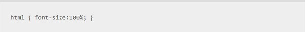
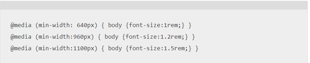

Making a website with a responsive design is crucial to keeping users using the website. Responsive design is the idea to create a website that works well across all devices such as mobile, tablet, laptop, and desktop. Since you never know which device a user could be using you do not want them coming on to the website and it being glitchy or not working at all. If a website is built only with desktop devices in mind you would be alienating a significant number of users that would want to use the site, but cannot.
There are several aspects to building a responsive website, but we are going to look at just one example of having a responsive design. That is the typography of the website which aims to make the text legible, readable, and appealing when displayed on the screen. If you look at the code below you can see how this can be implemented using CSS. The first step is to reset the font size since it relates to the html element. The next step is to add different font sizes for different container widths as seen below.

